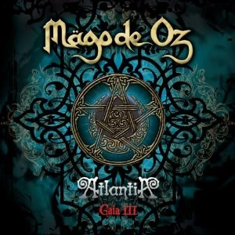

Nombre: Atlantia
Banda: Mago de oz
Album: Gaia III: Atlantia
Duracion: 19:14
Año: 2010

saber masMago de oz
Banda: Mago de oz
Album: Gaia III: Atlantia
Duracion: 19:14
Año: 2010

saber mascomparandola con la mitica atlantida, debido a su arrogacian y destruccion del medio ambiente.
contiene colaboraciones y fragmentos de otros temas de la trilogía, con una lirica critica hacia la religión, el consumismo y los excesos humanos.